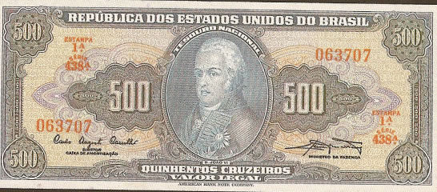
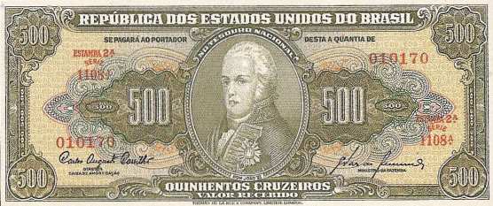

500 Cruzeiros
Dom João VI
Primeira Estampa - ABN
| Num |
Autógrafos e Chancelas |
Data |
Séries |
Tipo |
| C044 |
Autografada |
1943 | 001/160 | Valor Recebido |
| C045 |
Claudionor de Souza Lemos / Horácio Láfer | 1953 | 161/260 | Valor Recebido |
| C046 |
Carlos Augusto Carrilho / Clemente Mariani | 1961 | 261/660 | Valor Legal |
| C047 |
Reginaldo Fernandes Nunes / Walter Moreira Salles | 1962 | 661/1460 | Valor Legal |

Estampa:Anverso: Dom João VI
Reverso: Abertura dos Portos
Cores:Anverso: Azul e policromia
Reverso: Cinza
Dimensões Básicas: 157mmx67mm
Ofertas: Sem ofertas cadastradas
Segunda Estampa - TLR
| Num |
Autógrafos e Chancelas |
Data |
Séries |
Tipo |
| C099 |
Autografada | 1948 | 001/120 | Valor Recebido |
| C100 |
Claudionor de Souza Lemos / Eugênio Gudin | 1955 | 121/420 | Valor Recebido |
| C101 |
Claudionor de Souza Lemos / José Maria Whitaker | 1955 | 421/720 | Valor Recebido |
| C102 |
Claudionor de Souza Lemos / Lucas Lopes | 1958 | 721/770 | Valor Recebido |
| C103 |
Carlos Augusto Carrilho / Sebastião P. de Almeida | 1960 | 771/1300 | Valor Recebido |

Estampa:Anverso: Dom João VI
Reverso: Abertura dos Portos
Cores:Anverso: Verde escuro e policromia
Reverso: Verde escuro
Dimensões Básicas: 157mmx67mm
Ofertas: Sem ofertas cadastradas
Última Atualização: 27 de Julho de 2012
As imagens foram retiradas do livro "Cédulas Brasileiras de 1942 à 1991" e podem estar sobre copyright. Estão sendo aqui usadas como ferramenta de consulta.
Website desenvolvido em HTML 5, a linguagem do futuro! Feito em Adobe ™ Dreamweaver ® CS 5.5